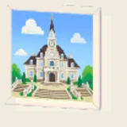
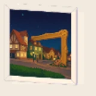
2. アート街交差点パズル
puzzle-002adopted: subsource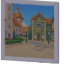
3. 「服屋の前」パズル箱
puzzle-003adopted: restored-subrestored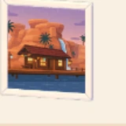
4. 水辺小屋パズル
puzzle-004adopted: mainsource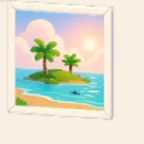
5. トロピカル小島パズル
puzzle-005adopted: subsource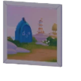
6. 漁村遠景パズル
puzzle-006adopted: subsource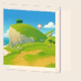
7. クジラ山パズル
puzzle-007adopted: mainsource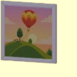
8. 熱気球パズル
puzzle-008adopted: subsource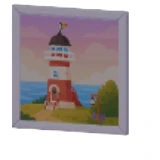
9. 海辺の灯台パズル
puzzle-009adopted: restored-subrestored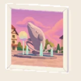
10. クジラ噴水パズル
puzzle-010adopted: restored-subrestored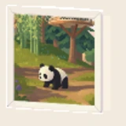
11. 旅するパンダパズル
puzzle-011adopted: restored-subrestored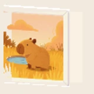
12. のんびりカピバラパズル
puzzle-012adopted: restored-mainrestored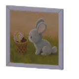
13. クンクンうさちゃんパズル
puzzle-013adopted: restored-subrestored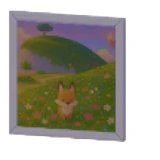
14. クジラ山のキツネパズル
puzzle-014adopted: restored-subrestored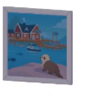
15. 魚をねらうラッコパズル
puzzle-015adopted: restored-subrestored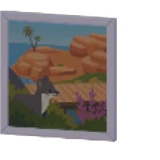
16. 風景に溶け込むテンパズル
puzzle-016adopted: restored-subrestored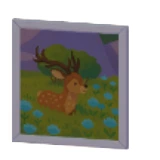
17. 草原を歩くシカパズル
puzzle-017adopted: restored-subrestored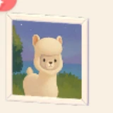
18. 夜のアルパカパズル
puzzle-018adopted: mainsource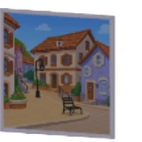
19. アート街中心パズル
puzzle-019adopted: restored-subrestored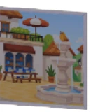
20. 本屋前の噴水パズル
puzzle-020adopted: restored-subrestored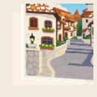
21. 住宅街入口パズル
puzzle-021adopted: restored-subrestored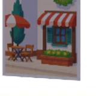
22. くつろぎのひとときパズル
puzzle-022adopted: restored-subrestored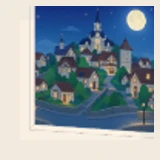
23. 満月の夜パズル
puzzle-023adopted: subsource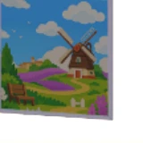
24. 風車の花畑パズル
puzzle-024adopted: restored-mainrestored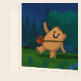
25. ウォーキーパズル
puzzle-025adopted: subsource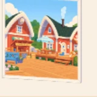
26. 漁村広場パズル
puzzle-026adopted: mainsource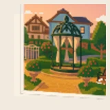
27. 花園あずまやパズル
puzzle-027adopted: subsource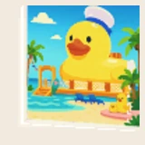
28. アヒルのジャングルステージパズル
puzzle-028adopted: restored-subrestored29. パンダの親子パズル
puzzle-029adopted: restored-mainrestored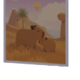
30. カピバラすりすりパズル
puzzle-030adopted: restored-subrestored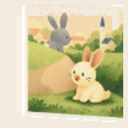
31. ウサギフレンズパズル
puzzle-031adopted: restored-subrestored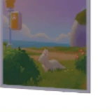
32. 旅するキツネパズル
puzzle-032adopted: restored-subrestored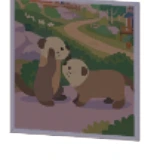
33. ラッコペアパズル
puzzle-033adopted: restored-mainrestored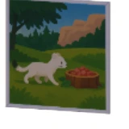
34. ごちそう発見テンパズル
puzzle-034adopted: restored-mainrestored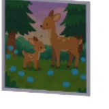
35. シカの親子パズル
puzzle-035adopted: restored-subrestored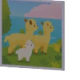
36. アルパカ一家パズル
puzzle-036adopted: restored-subrestored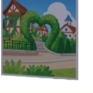
37. 緑のハートゲートパズル
puzzle-037adopted: restored-subrestored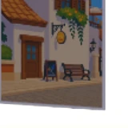
38. コーヒーハウスパズル
puzzle-038adopted: subsource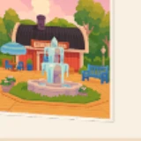
39. 漁村噴水パズル
puzzle-039adopted: mainsource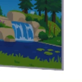
40. 森のせせらぎパズル
puzzle-040adopted: restored-subrestored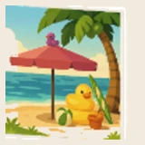
41. 楽しいビーチパズル
puzzle-041adopted: restored-mainrestored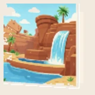
42. 温泉山の湖パズル
puzzle-042adopted: restored-subrestored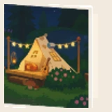
43. キャンプ場の一夜パズル
puzzle-043adopted: restored-mainrestored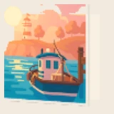
44. ゆっくり進む漁船パズル
puzzle-044adopted: subsource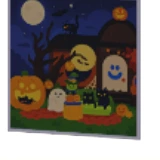
45. 怪奇パーティーパズル
puzzle-045adopted: restored-mainrestored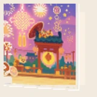
46. 新春の思い出パズル
puzzle-046adopted: restored-subrestored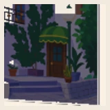
47. 住宅街の曲がり角パズル
puzzle-047adopted: mainsource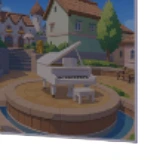
48. 白いピアノパズル
puzzle-048adopted: restored-subrestored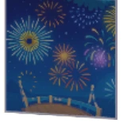
49. 花火大会パズル
puzzle-049adopted: restored-mainrestored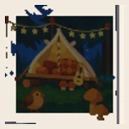
50. キャンプ場パズル
puzzle-050adopted: mainsource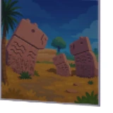
51. カピバラ像パズル
puzzle-051adopted: subsource52. 駐車場の車パズル
puzzle-052adopted: restored-mainrestored53. 森林の吊り橋パズル
puzzle-053adopted: restored-mainrestored54. 郊外の駐輪場パズル
puzzle-054adopted: restored-mainrestored55. クジラ雲パズル
puzzle-055adopted: restored-mainrestored56. ビーチのヤシの木パズル
puzzle-056adopted: mainsource57. キノコとシカパズル
puzzle-057adopted: restored-subrestored58. 不気味なキノコパズル
puzzle-058adopted: restored-subrestored59. パンダ独り座りパズル
puzzle-059adopted: restored-subrestored60. パンダと成長パズル
puzzle-060adopted: restored-subrestored61. パンダファミリーパズル
puzzle-061adopted: mainsource62. カピバラ山パズル
puzzle-062adopted: subsource63. 狭路遭遇パズル
puzzle-063adopted: restored-mainrestored64. カピバラ食事会パズル
puzzle-064adopted: restored-mainrestored65. いたずらウサギパズル
puzzle-065adopted: restored-subrestored66. 本棚からウサギパズル
puzzle-066adopted: restored-subrestored67. ウサギ整列パズル
puzzle-067adopted: subsource68. キツネキャンプパズル
puzzle-068adopted: restored-subrestored69. 遅刻キツネパズル
puzzle-069adopted: restored-subrestored70. キツネたちの花見パズル
puzzle-070adopted: restored-subrestored71. のんびりラッコパズル
puzzle-071adopted: restored-subrestored72. 桟橋を眺めるラッコパズル
puzzle-072adopted: restored-subrestored73. ぷかぷかラッコパズル
puzzle-073adopted: restored-subrestored74. 梁渡りのテンパズル
puzzle-074adopted: restored-subrestored75. 親子でお出かけパズル
puzzle-075adopted: restored-mainrestored76. テンの群れパズル
puzzle-076adopted: restored-subrestored77. 無邪気な子ジカパズル
puzzle-077adopted: mainsource78. 子ジカの沢登りパズル
puzzle-078adopted: restored-subrestored79. 幸せなシカ一家パズル
puzzle-079adopted: restored-subrestored80. 陽だまりのアルパカパズル
puzzle-080adopted: restored-subrestored81. アルパカの散歩パズル
puzzle-081adopted: subsource82. アルパカの旅パズル
puzzle-082adopted: restored-subrestored83. 天空のオーロラパズル
puzzle-083adopted: restored-subrestored84. スノー音楽会パズル
puzzle-084adopted: subsource85. 雪だるまの声パズル
puzzle-085adopted: subsource86. きらめく雪景色パズル
puzzle-086adopted: restored-subrestored87. おしゃれペンギンパズル
puzzle-087adopted: restored-subrestored88. 子育てペンギンパズル
puzzle-088adopted: restored-mainrestored89. ペンギン捕食パズル
puzzle-089adopted: restored-subrestored90. ペンギン展望エリアパズル
puzzle-090adopted: restored-subrestored91. シェフ・モモパズル
puzzle-091adopted: restored-mainrestored92. 雪降る海岸パズル
puzzle-092adopted: restored-mainrestored93. 子ペンギンの冒険パズル
puzzle-093adopted: restored-subrestored94. 水泳レッスンパズル
puzzle-094adopted: restored-subrestored95. 野シダタワーパズル
puzzle-095adopted: restored-mainrestored96. 野ニンニクガラシ山パズル
puzzle-096adopted: restored-subrestored97. 野ゴボウ木パズル
puzzle-097adopted: restored-subrestored98. 野カラシナ海パズル
puzzle-098adopted: restored-subrestored99. イルカの水遊びパズル
puzzle-099adopted: restored-subrestored100. イルカの漁パズル
puzzle-100adopted: subsource101. 幻想ホエールフォールパズル
puzzle-101adopted: subsource102. ホエールフォール峡谷パズル
puzzle-102adopted: restored-subrestored103. 仲良しイルカパズル
puzzle-103adopted: subsource104. 天然のギャラリーパズル
puzzle-104adopted: restored-subrestored105. 海洋風景パズル
puzzle-105adopted: restored-subrestored106. イルカのひとり旅パズル
puzzle-106adopted: mainsource107. カクレクマノミの群れパズル
puzzle-107adopted: restored-subrestored108. ビーチタイムパズル
puzzle-108adopted: restored-subrestored109. 森の夕暮れパズル
puzzle-109adopted: restored-mainrestored110. ホエールデッキパズル
puzzle-110adopted: restored-mainrestored